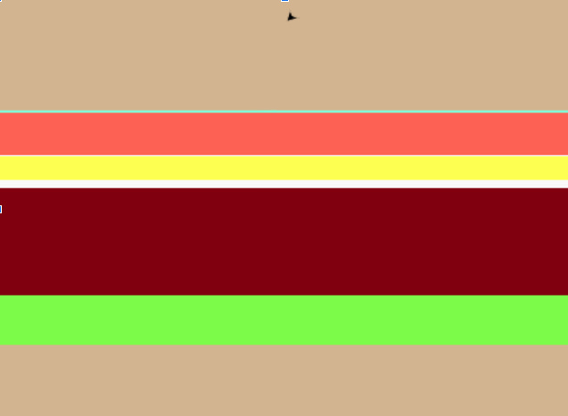
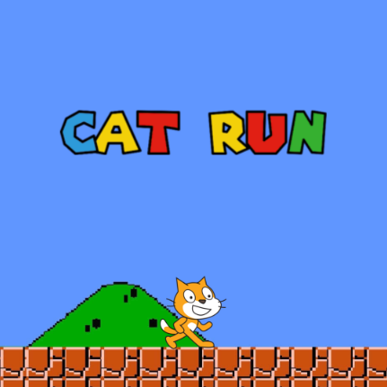
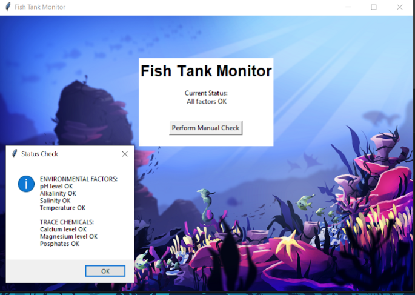
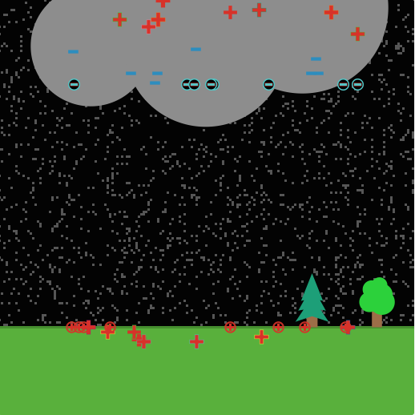
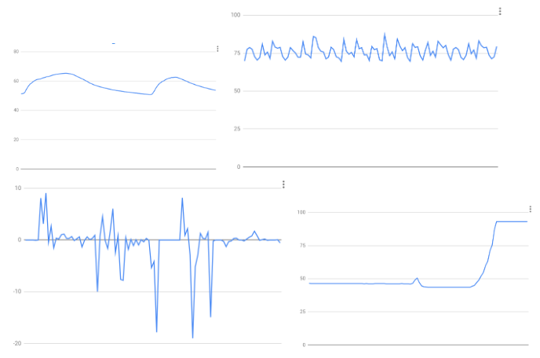
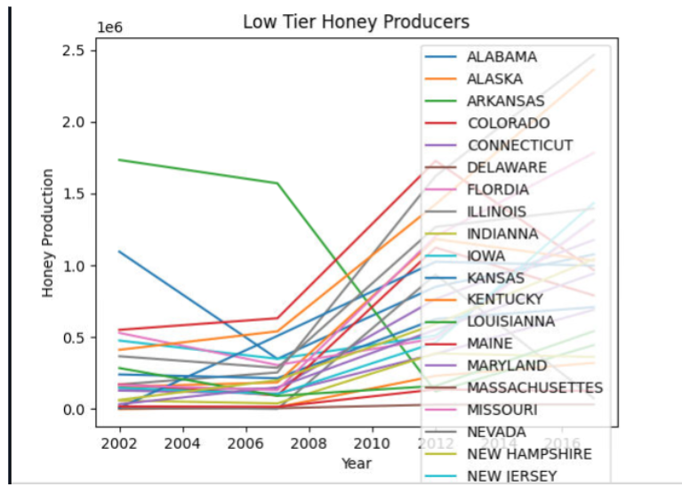

Home
Portfolio
About Me
My Portfolio Page

1.1.9 Project: Make Your Own Burger

1.2.5 Project: Halloween Candy Dropper
Halloween Candy Dropper is a program where candy drops
and the player must control the basket so it picks up as many candy
as they can within 20 seconds.
Scratch Project: Cat Run

Cat Run is a game where you are a cat and you have
to beat the obstacles to get to the end.
Phishy Fish Tank

In this project, there was a system breach in a company. We had to debug the unexpected errors in the fish tank monitoring system. In order to do this,
we used print statements to check if variables, lists, and conditional expressions worked as originally intended.
4.1.1 Project: NetLogo Lightning Simulation

For our 4.1.1 project, we decided to pick a lightning simulation. It simulates negative currents and positive currents interacting to form a lightning strike.
It shows how lightning works and the common conditions during a lightning strike.
3.1.6 Project

Rover Phone Home is a project where we are required to create multiple graphs for us to conclude which region a rover with multiple functions is located.
The potential regions in which this rover could be located are the Rocky Mountains, Inland Forests, Marsh Lands, Desert Plains, and Tropical Islands.
Using multiple graphs, we concluded that the rover was in the The Rocky Mountains since our process allowed us to use the process of elimination and
common facts in order to get this result.
3.2.4 Project

For this project, we got data about honey production and made different types of graphs to analyze the different types of data we collected. We organized the data
into different types of graphs to see all the details.